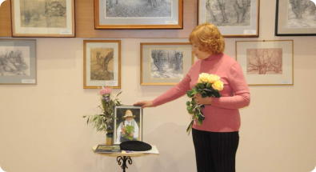

Вода: скарб, яким ми нехтуємо
Стаціонарна виставка присвячена одній із найважливіших хімічних речовин, без якої не можливе органічне життя – воді. Вона входить до складу багатьох гірських порід та живих організмів (рослини і тварини містять понад 60 % води, деякі – навіть близько 90 %), ця речовина вкриває понад 70 % поверхні Землі та є однією з найпоширеніших на нашій планеті. Величезне значення має кругообіг води на планеті, в результаті чого, наприклад, виникають опади (дощ, сніг, туман тощо). Саме опади, разом з іншим показником – вологістю повітря – приймають безпосередню участь у регулюванні погоди та клімату. Також природні води виступають одним із найважливіших геологічних факторів, оскільки під їх дією відбувається зміна зовнішнього вигляду земної поверхні.
Вода вкрай важлива для живих організмів, оскільки саме завдяки їй відбувається чимало процесів (зокрема, живлення). Ця речовина широко застосовується людиною в техніці та сільському господарстві.
На виставці представлено інформацію щодо основних властивостей води, а також цікаві факти про цю речовину. Обговорюється важливість води для існування всього живого на нашій планеті та її роль у житті людини.
Тут можна побачити гербарні зразки рослин, опудала та мокрі препарати тварин (риб, земноводних, птахів і ссавців), життя яких прямо чи опосередковано пов’язане з водним середовищем. Зокрема, роздивитися зблизька велику білу і сіру чапель, очеретяного луня, нутрію, загадкову саламандру та тритонів, болотяну черепаху, майже два десятки видів риб (зокрема і таких рідкісних, як стерлядь, малий чоп, смугастий йорж). А також дізнатися, що на Буковині мешкає два види вужів, один з яких (водяний вуж) не має жовтих «вушок» і поширений у нас виключно уздовж Дністра.
Окремий розділ виставки присвячено збереженню води – унікальної речовини та надзвичайно цінного ресурсу, без якого життя на нашій планеті стане неможливим.
-

Вода – скарб, яким ми нехтуємо
-
Тваринний світ краю
-
Із золотої скарбниці Краєзнавчого музею
-
Археологія краю від найдавніших часів до середини XIV ст.
-
Наш край у складі землі Молдавської
-
Буковина у складі Габсбурзької монархії (1774–1918 рр.)
-
Наш край в роки Першої світової війни
-
Північна Буковина та Хотинщина в складі Королівства Румунія
-
Народний одяг та традиційні ремесла Буковини
-
Календарні свята та обряди на Буковині
-
Чернівецька область у роки Другої світової війни
-
Чернівецька область в 1944–1991 рр.: події, факти, імена
-
Усе моє, все зветься Україна
-
На захисті свободи
-
Культура Чернівецької області (друга половина ХХ – початок ХХІ ст.)
-
Буковинська діаспора